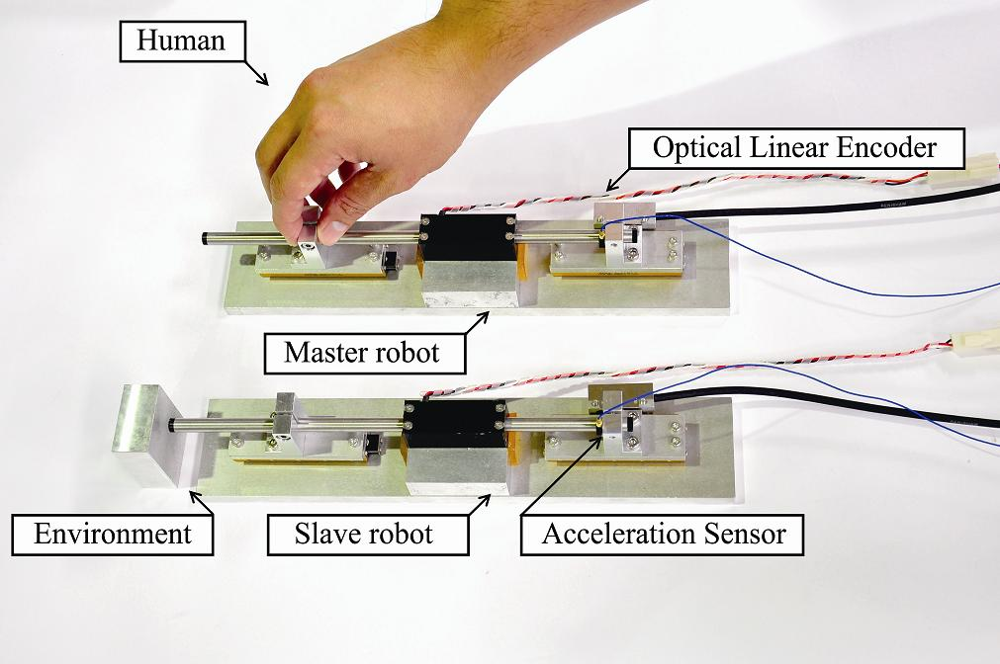
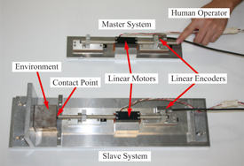
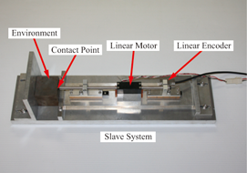

ハプティクス
|  | |
バイラテラル制御
人間は五つの感覚器，すなわち聴覚，視覚，嗅覚，味覚そして触覚・力覚を駆使して世界を認識しています。 ところが，ラジオ，電話，テレビやインターネットは聴覚情報や視覚情報を提供しています。 残る三つの感覚が欠落しているわけですから，遠隔地の臨場感溢れる感覚を伝えることはできません。
そこで，触覚・力覚の伝送を可能とする技術がバイラテラル制御です。 バイラテラル制御はマスタとスレーブ間で作用反作用を人工的に作り出すことで，触覚・力覚の伝達を実現します。 上の写真にバイラテラル制御の実験装置を示します。 アクチュエータにはリニアモータ(シャフトモータ)を用いています。 上側のリニアモータ(マスタ)を操作者が操作すると，下側のリニアモータ(スレーブ)が同期して動きます。 双方に加わる力をお互いにやり取りすることで，感覚・感触を伝え合います。 この実験では，上側の操作者は下側の環境を知覚することができます。
バイラテラル制御によってアクチュエータを使ってマスタとスレーブ間の感覚・感触を伝え合うことができます。 この技術を普及させることができれば，実世界の画面の中のものを触ることが可能となるでしょう。 大石・横倉研究室ではこのバイラテラル制御について様々な見地から研究を行なっています。
モーションコピーシステム
大石・横倉研究室では，触覚・力覚情報の保存と再現を実現するモーションコピーシステムについても研究を行なっています。 モーションコピーシステムは下の写真に示すようなアクチュエータを用いて，人間の動作の保存と再現を実現します。 モーションコピーシステムは，モーション保存システムとモーション再現システムで構成されます。 モーション保存システムは操作者の動作を保存し，モーション再現システムは保存された動作データを基に，操作者の位置と力の双方を再現することができます。 すなわち時間と空間を越えて操作者の動作(触覚・力覚)を再現することが可能となります。
 
モーション保存システム(左)とモーション再現システム(右)の実験装置
このモーションコピーシステムを用いることで，熟練技能者や手術の術者等，様々な技能を持つ操作者の動作を保存し，ロボットに技術の継承をさせることができるようになるでしょう。
既存技術との相違： 人間の動作を抽出する手法としてモーションキャプチャがありますが，モーションキャプチャでは位置情報しか取得できません。 一方のモーションコピーシステムは位置情報に加え力情報の取得も可能であり，また抽出された位置と力をそのまま再現することができます。 従って，繊細な力加減までも扱えます。 さらに，本手法は対象環境のモデルを一切用いないため，実用的な技術です。